Research Overview — Three Categories
A · Parameter Optimisation
- Titanium alloy GRADE 2
- Sintered carbide WC-Co
Find optimal laser settings for surface quality and material removal.
B · Surface Tribology
- Steel 11373 — grooves & dimples
- Tool steel 1.2311 — large structures
- Tool steel 90MnCrV8 + lubricants
Create microstructures by laser; measure friction via Ring test.
C · Applied Manufacturing
- Chip breaker on cutting insert
- Injection mold texturing
Produce functional parts; evaluate dimensional quality.
Platform DMG MORI LASERTEC 80 Shape — 5-axis CNC, pulsed ytterbium fibre laser, 1068 nm, max 100 W · CE5AM Centre of Excellence, MTF STU Trnava
Experiment Design — Titanium Alloy GRADE 2
- Material: commercially pure titanium GRADE 2 (flat bar samples)
- Machine: LASERTEC 80 Shape (100 W ytterbium fibre laser)
- Design: Taguchi L9 orthogonal matrix — 9 experiments
- Two scanning strategies: hatching vs. cross-hatching
- Ra measured in two perpendicular directions per sample
- Statistical analysis: DFA + ANOVA (Minitab)

DMG MORI LASERTEC 80 Shape — CE5AM Centre, MTF STU Trnava
Taguchi L9 — Factors & Scanning Strategies
| Factor | Level 1 | Level 2 | Level 3 |
|---|---|---|---|
| Pulse frequency (kHz) | 40 | 60 | 80 |
| Laser power (%) | 50 | 75 | 100 |
| Scan speed (mm/s) | 1 000 | 1 600 | 2 200 |
| Track spacing (µm) | 5 | 10 | 15 |
9 experiments × 2 strategies × 2 measurement directions = 36 Ra values.
Both strategies tested on the same titanium sample surface.
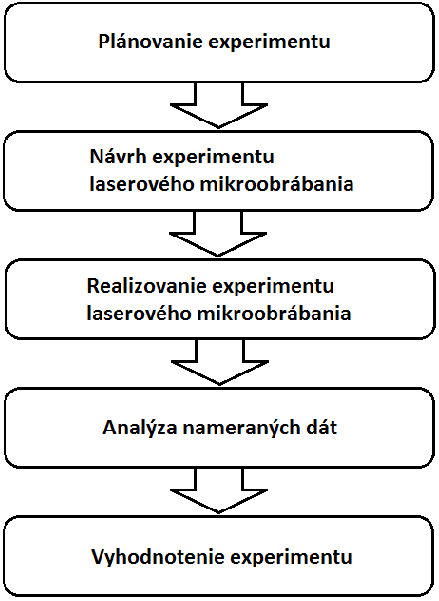
Hatching (parallel passes) vs. cross-hatching (perpendicular passes)
Results — Surface Roughness Ra
| Strategy | Best Ra (µm) | Optimal parameters |
|---|---|---|
| Hatching — direction 1 | 1.17 | 80 kHz · 75% · 1 000 mm/s · h=15 µm |
| Hatching — direction 2 | 2.26 | (same sample, perpendicular) |
| Cross-hatching — dir. 1 | 1.55 | 60 kHz · 50% · 1 600 mm/s · h=15 µm |
| Cross-hatching — dir. 2 | 1.57 | (same sample, perpendicular) |
- KEY Track spacing most influential factor — up to 51%
- Scan speed: least influential — below 14% in all cases
- Cross-hatching preferred — isotropic surface (similar Ra both directions)
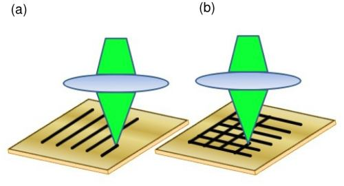
Mitutoyo SJ-210 — measuring Ra on titanium samples
Experiment Design — Sintered Carbide WC-Co
- Material: uncoated carbide inserts — PRAMET CNHA 120408
(10% Co · remainder WC) - Machine: LASERTEC 80 Shape (same as Study A1)
- Design: Half-factorial 3³ — 27 experiments
- Strategy: cross-hatching only (superior from A1)
- Two outputs: surface roughness Ra + ablation rate
- Analysis: Minitab — ANOVA, Pareto significance
| Factor | L1 | L2 | L3 |
|---|---|---|---|
| Frequency (kHz) | 40 | 60 | 80 |
| Power (W) | 50 | 75 | 100 |
| Scan speed (mm/s) | 1 000 | 1 600 | 2 200 |
| Track spacing (µm) | 5 | 10 | 15 |
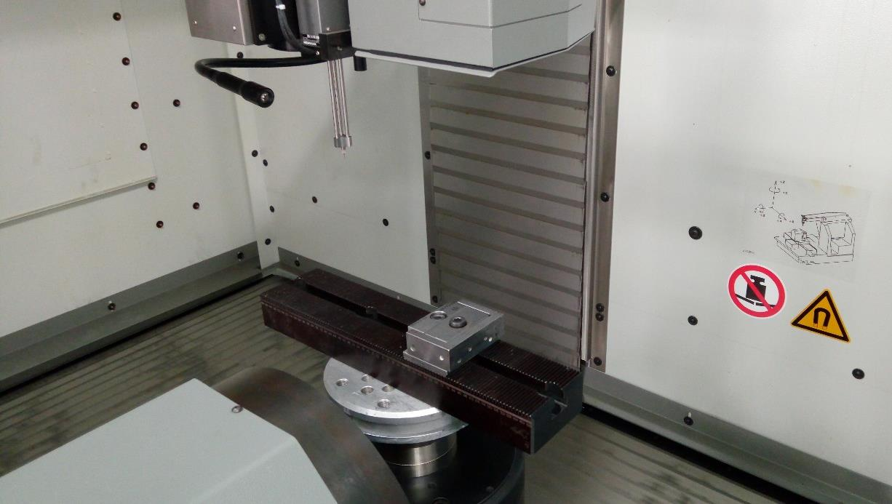
LASERTEC 80 Shape — working area with mounted sintered carbide insert
WC-Co Surfaces after Laser Micromachining
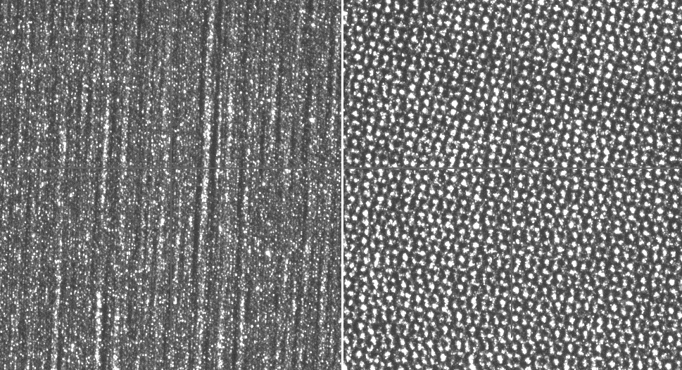
Surfaces #1 & #2 — fp=40 kHz, P=50/75 W, varying speed & spacing
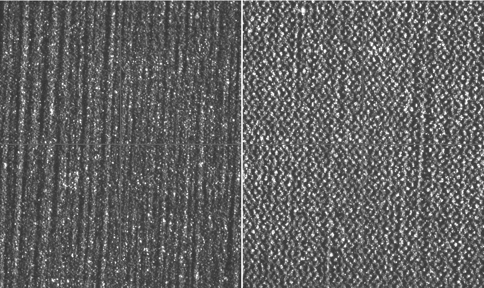
Surfaces #3 & #4 — fp=40 kHz, P=100 W / 50 W, different track spacing
KEY Track spacing + power most influential for Ra and ablation rate on WC-Co. Results provide a machine-specific calibration baseline for sintered carbide.
Ring Test — Measuring Friction Coefficient
- Metal ring compressed between two tool surfaces (4 steps)
- Inner diameter change is friction-sensitive:
- Low friction → inner diameter increases
- High friction → inner diameter decreases
- Friction coefficient f read from calibration curve
- Textured vs. smooth (reference) tools compared
- Used across all 3 tribological studies — B1, B2, B3
Machine: EU 40 hydraulic press (0–200 kN) · MTF STU Trnava forming laboratory
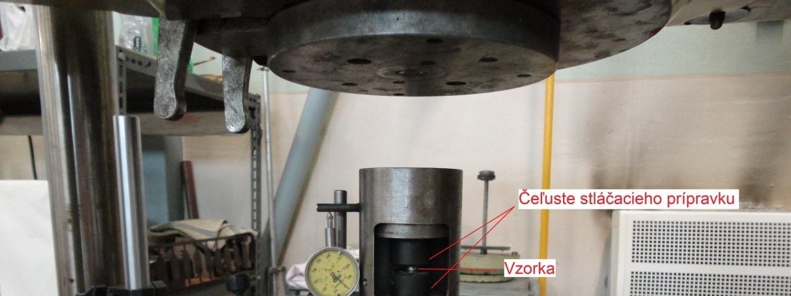
EU 40 hydraulic press with ring compression fixture
Laser Structured Surfaces — Steel 11373
- Material: steel 11 373 (STN 411373) ring samples
- Two laser systems compared:
- DM01 marking laser — external (Nové Mesto n. Váhom)
- LASERTEC 80 Shape — CE5AM, MTF
- Three structure types:
- Type A — narrow parallel grooves (0.5 mm spacing)
- Type B — wide deep grooves (0.3 mm wide)
- Type C — hemispherical dimples (∅ 0.15 mm)
- Reference: smooth unstructured surface
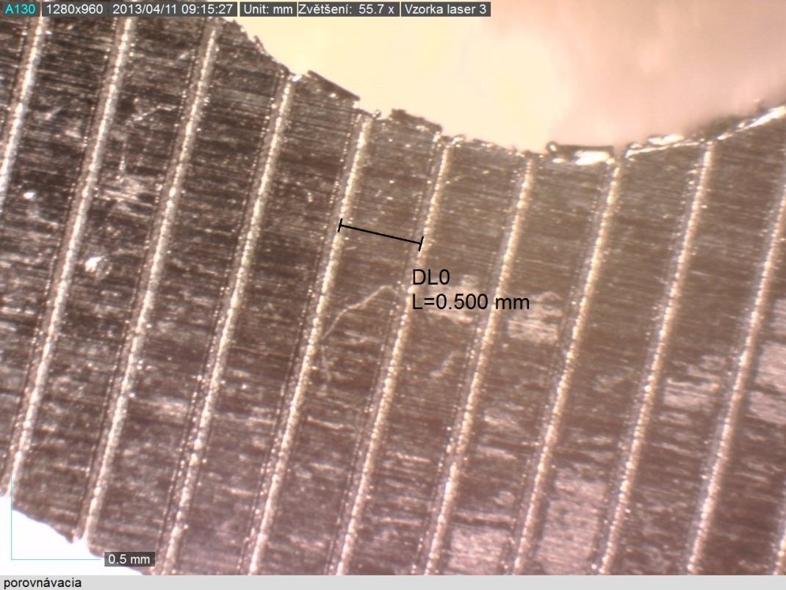
Type A — narrow groove (55.7× magnification)
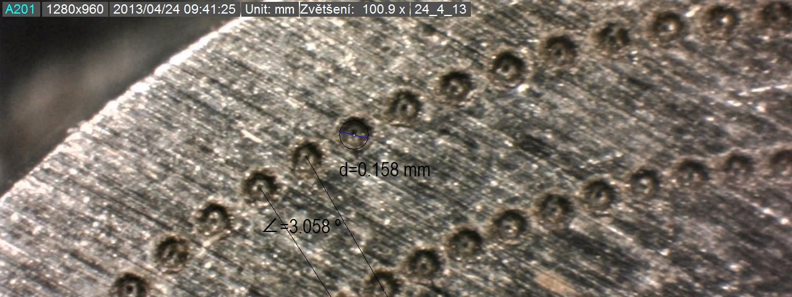
Type B — wide groove (LASERTEC 80 Shape)
Friction Coefficient Results — Steel 11373
| Sample | Structure | Laser | f (–) |
|---|---|---|---|
| Z1_01 | Reference (no structure) | — | 0.189 |
| A1_01 | Narrow grooves | DM01 | 0.225 |
| A1_06 | Narrow grooves | DM01 | 0.220 |
| A1_08 | Narrow grooves (best quality) | DM01 | 0.260 |
| B1_01 | Wide deep grooves | LASERTEC 80 | 0.128 ↓ −32% |
| C1_01 | Hemispheres (3° pitch) | LASERTEC 80 | 0.213 |
| C1_02 | Hemispheres (6° pitch) | LASERTEC 80 | 0.188 |
Wide grooves (B1) achieved lowest friction — large groove geometry creates minimal real contact area, acting as lubricant reservoir. Narrow groove ridges raised roughness → friction increased vs. reference.
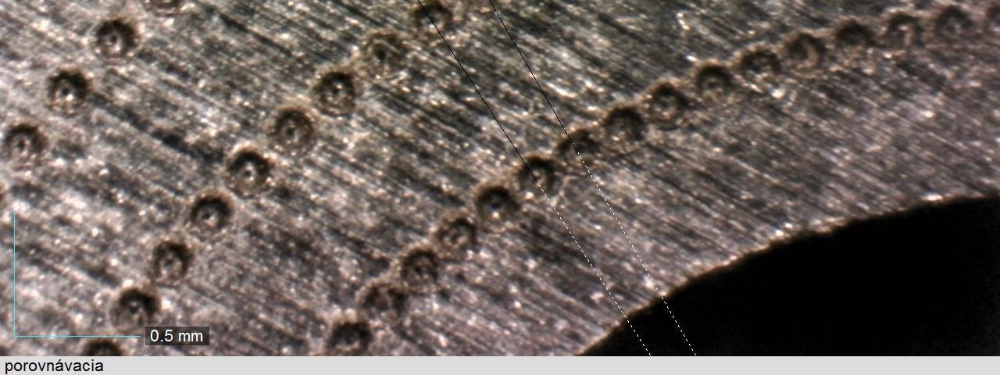
Type C — hemispherical dimples (∅ ≈ 0.15 mm)
Laser Micro-Structuring — Tool Steel 1.2311
- Material: mold tool steel 1.2311 (40CrMnMoS8-6)
- Machine: LASERTEC 80 PowerDrill (58 W · 80 kHz · 1600 mm/s)
- Structure: triangular grid microstructure
- Element arm length: 500 µm
- Cavity depth: ~410 µm
- Track spacing: 10 µm
- Machining time: ~9 hours per sample
- Quality verified by optical microscopy before ring test
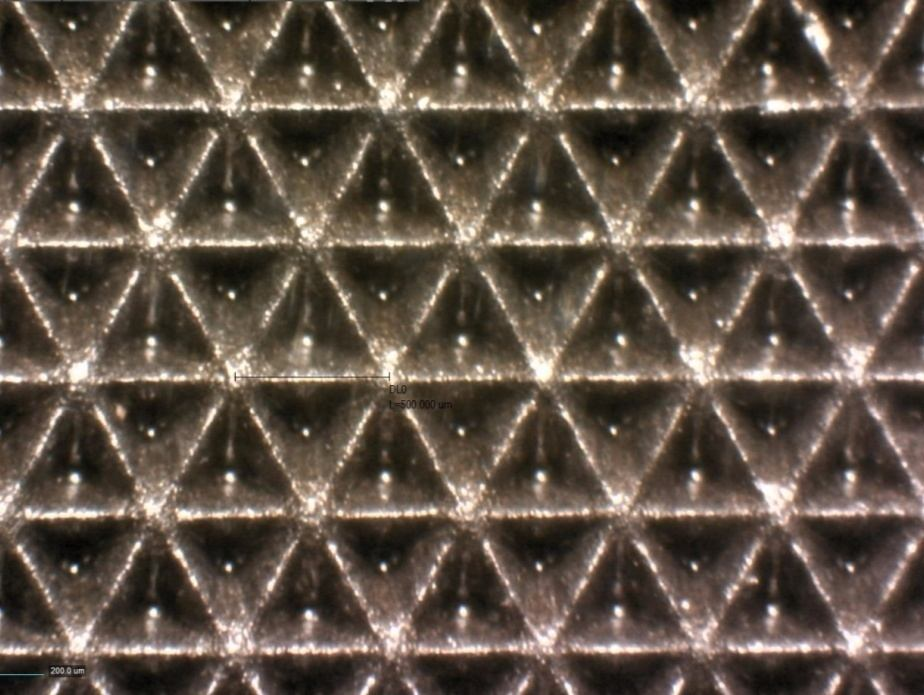
Triangular microstructures on tool steel surface (optical microscope, 500 µm scale)
Ring Test — Friction Increased (Contrary to Expectation)
Unstructured (reference)
f = 0.258
Microstructured
f = 0.315 ↑
- Root cause: structures too large (500 µm · 410 µm deep) — metal flowed into cavities during compression, creating extra resistance
- Reframed application: these structures increase friction — suitable for grippers, anti-slip surfaces, clamping faces
- Fix: return to 50 µm design — requires femtosecond laser
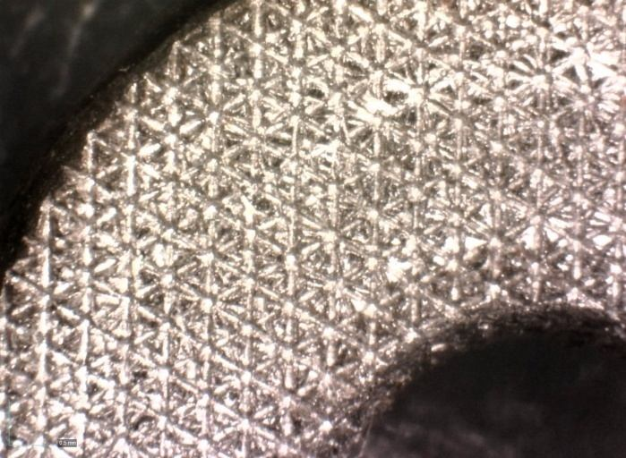
Compressed ring after test on microstructured tool — visible material deformation into cavities
Laser Surface Texturing — Systematic Lubricant Study
- Material: tool steel 90MnCrV8 compression tool punches
- Machine: LASERTEC 80 Shape
- 4 paraboloid dimple texture designs (depth 10–15 µm)
- 3 lubrication conditions tested in Ring test:
- Dry — no lubricant
- Variocut C462 — low viscosity cutting fluid
- Iloform FST4 — high viscosity forming oil
- 15 Ring test configurations total
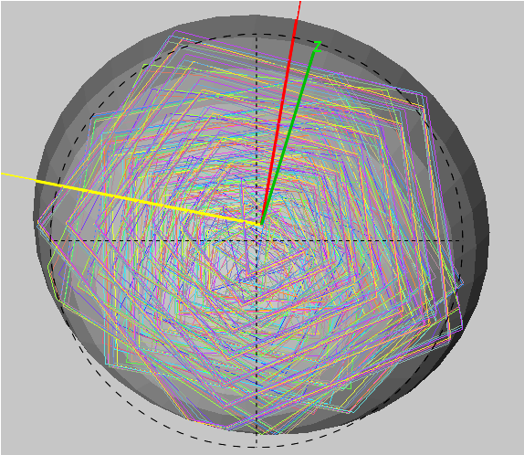
Confocal microscopy — dimple texture on compression tool face
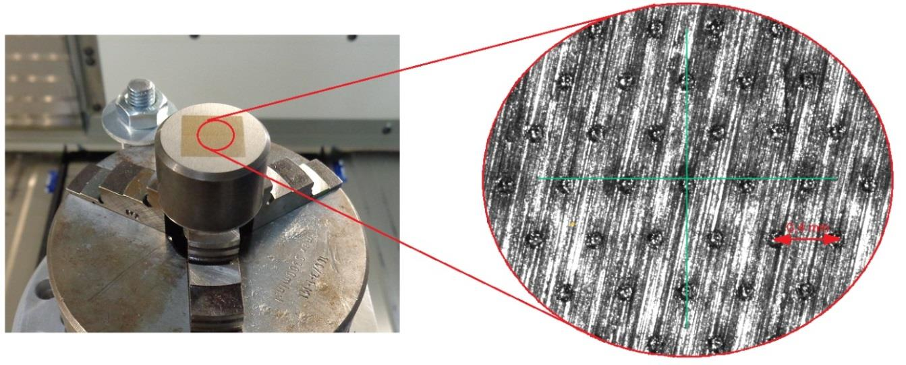
Paraboloid dimple profile — tool steel surface
Friction Coefficient — Texture × Lubricant Matrix
| Surface | Dry | Variocut C462 | Iloform FST4 |
|---|---|---|---|
| Reference (smooth) | 0.275 | 0.295 | 0.164 |
| Texture I | 0.183 (−33%) | 0.184 | 0.208 ↑ |
| Texture II | 0.256 | 0.220 | 0.220 ↑ |
| Texture III | 0.260 | 0.233 | 0.176 ↑ |
| Texture IV | 0.250 | 0.158 (−46%) | 0.153 |
Best result
Texture IV + Variocut C462 → f = 0.158 (−46% vs. reference)
Key limitation
High-viscosity lubricant (Iloform) dominates — textures add no benefit. 10 µm depth too shallow for LASERTEC 80 Shape.
Recommendation: pico/femtosecond laser for fine dimples · low-viscosity lubricant (10–20 mm²/s) · dimple depth/diameter ratio 0.1–0.2 · texture density ≥ 30%
Chip Breaker Production — CAD → CAM → Laser → Scan
- Goal: produce chip breaker geometry on carbide turning insert by laser (alternative to conventional grinding)
- Workflow:
- CAD: Autodesk Inventor
- CAM: LpsWin (STL → laser paths)
- Machining: LASERTEC 80 Shape (SAUER)
- Verification: ATOS GOM optical 3D scanner
- 6 parameter tests → optimal: 60 kHz · 2000 mm/s · 29 W
- Track spacing 10 µm · material removal 1 µm/layer
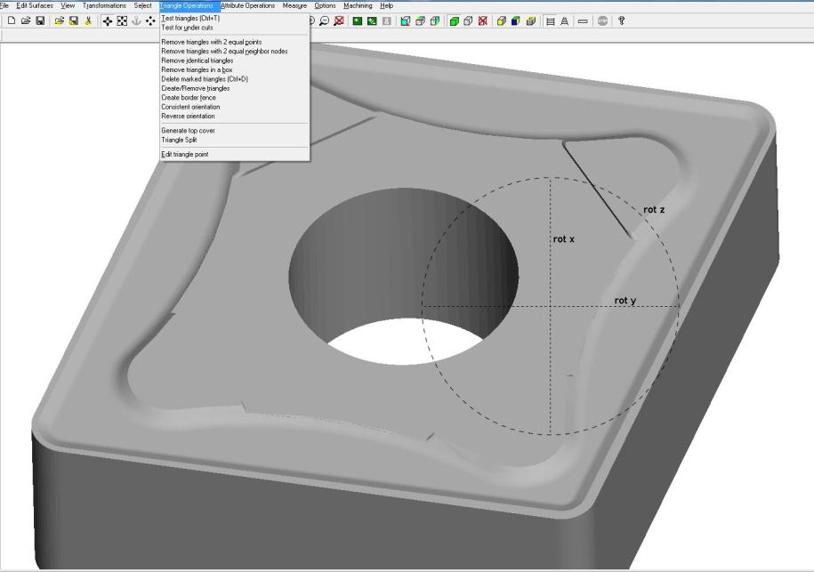
LpsWin CAM — generated laser beam paths on cutting insert surface
Result — CAD vs. Machined Shape (ATOS GOM Scan)
Max. deviation
0.09 mm
Machining time / side
~25–30 min
- Chip breaker shape correctly reproduced — geometry confirmed
- Deviation too large for serial production → prototype / R&D only
- Laser micromachining suitable for new geometry exploration in R&D of carbide and CBN inserts
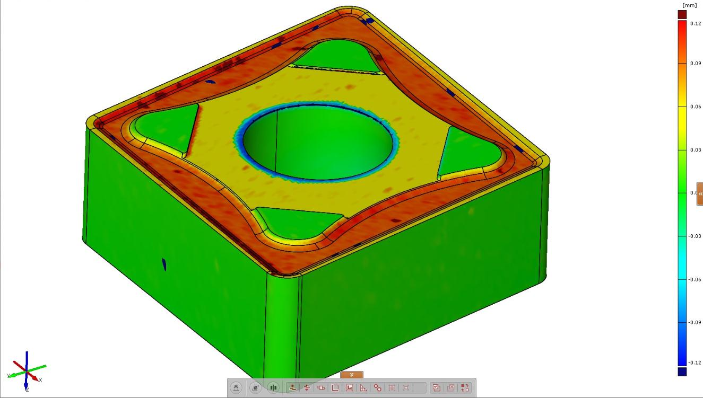
ATOS GOM 3D scan — colour deviation map: machined chip breaker vs. CAD model
Injection Mold Texturing — Flat & 5-Axis Cavities
- Goal: apply decorative/functional textures to mold cavities; transfer to HDPE plastic parts
- Workflow:
- CAD design (4 textures) — Autodesk PowerSHAPE
- STL → bitmap (GenBmp) → texture placement (GIMP)
- LpsWin: define machining parameters + paths
- LASERTEC 80 Shape (flat + 5-axis cavity)
- Injection moulding: Babyplast micro-machine (HDPE)
- Settings: 20 µm track spacing · 0.002 mm/layer · 80 kHz · 1600 mm/s
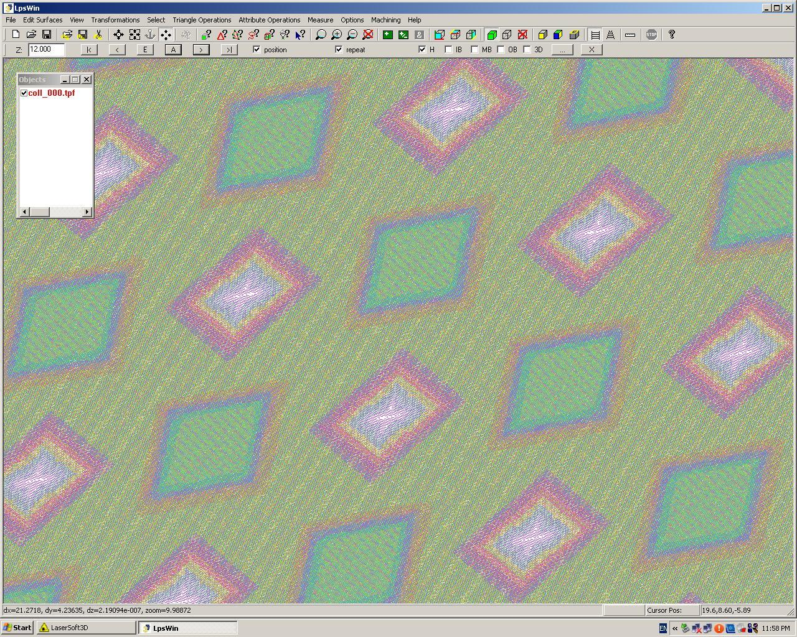
LpsWin — laser paths for texture bitmap on mold surface
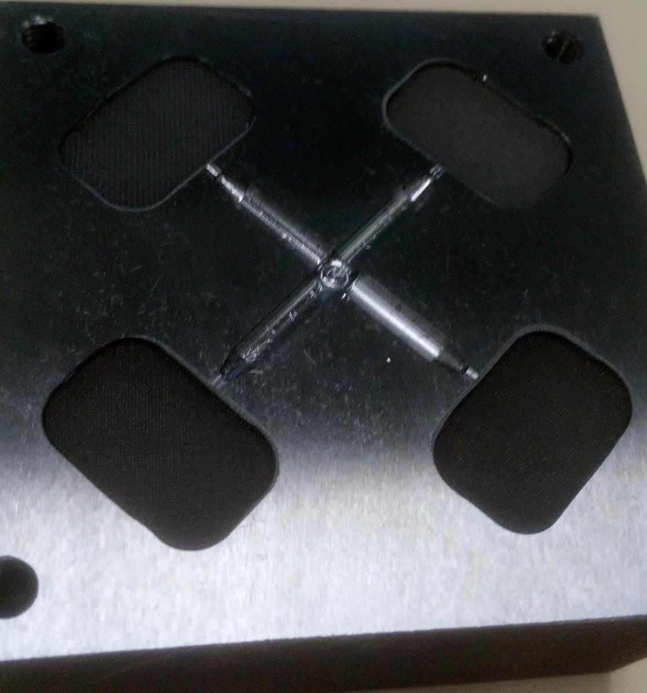
LpsWin — machining region defined on mold cavity
Texturing Results — Three Production Rounds
Round 1 — Flat cavity (0.4–0.84 mm textures)
Textures invisible after moulding — too small. Mold re-milled, all textures redesigned to 4 mm.
Round 2 — Flat cavity (redesigned 4 mm)
2 of 4 textures met requirements. Oval mold artifact and jetting effect (poor gate) persisted.
Round 3 — 5-axis complex cavity
All textures visible on mold. Quality degraded in cavity centre — possible fixture movement or programming error. Hexagonal texture best (deepest geometry, best HDPE transfer).
Key finding: texture depth > 1 mm critical for reliable plastic transfer. 5-axis texturing of complex surfaces is feasible.
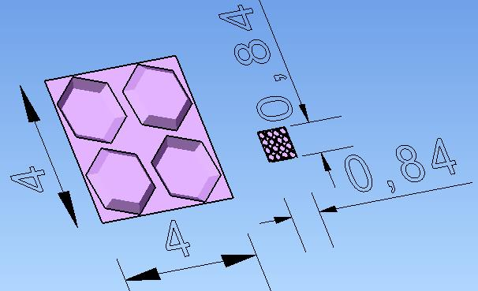
Redesigned textures on mold cavity (4 mm scale) — distinct patterns visible before injection moulding
Summary — 7 Research Theses on Laser Micromachining
| Cat. | Material / Application | Method | Key Result |
|---|---|---|---|
| A | Titanium GRADE 2 | Taguchi L9, hatching & cross-hatching | Ra = 1.17 µm / 1.55 µm isotropic; track spacing dominates (>51%) |
| A | Sintered carbide WC-Co | Half-factorial 27 exp., cross-hatching | Optimal params for Ra & ablation rate; power + spacing most influential |
| B | Steel 11373 — grooves & dimples | Ring test, 2 laser systems | Wide grooves: f = 0.128 (−32%); narrow grooves raised friction |
| B | Tool steel 1.2311 — large structures | Ring test, LASERTEC 80 PowerDrill | Friction increased (f = 0.315) — suited for grip applications, not lubrication |
| B | Tool steel 90MnCrV8 — dimple textures | Ring test, 4 textures × 3 lubricants | Best: Texture IV + Variocut C462 → f = 0.158 (−46%) |
| C | Chip breaker on carbide insert | CAD → CAM → LASERTEC → ATOS scan | Prototype shape achieved; deviation 0.09 mm; 25–30 min/side → R&D only |
| C | Injection mold texturing | Bitmap + 5-axis LASERTEC → Babyplast | 5-axis texturing feasible; depth >1 mm critical; hexagonal texture best transfer |
All studies: DMG MORI LASERTEC 80 Shape · CE5AM Centre of Excellence · MTF STU Trnava · 2013–2018